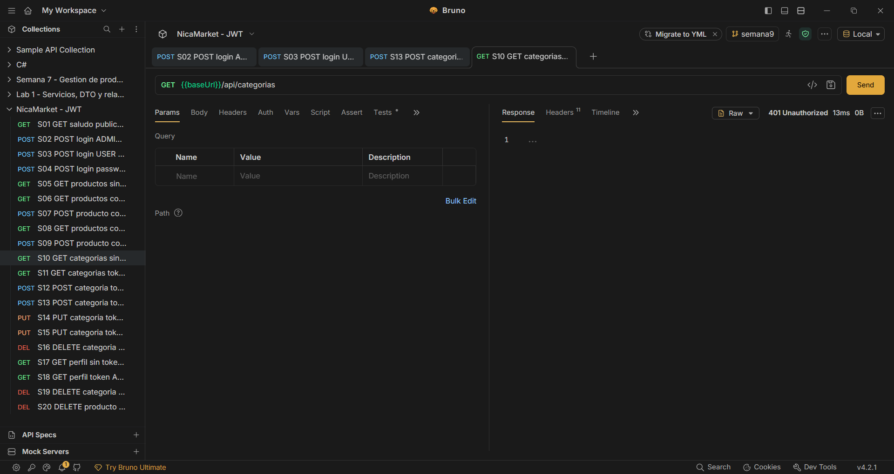
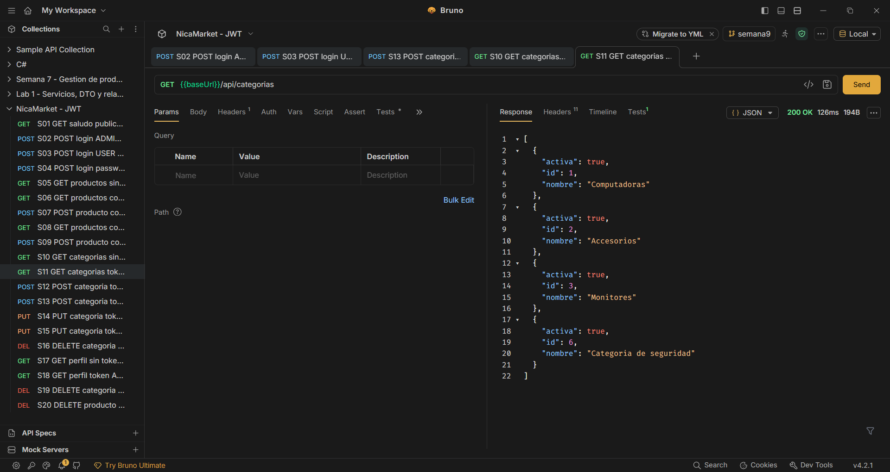
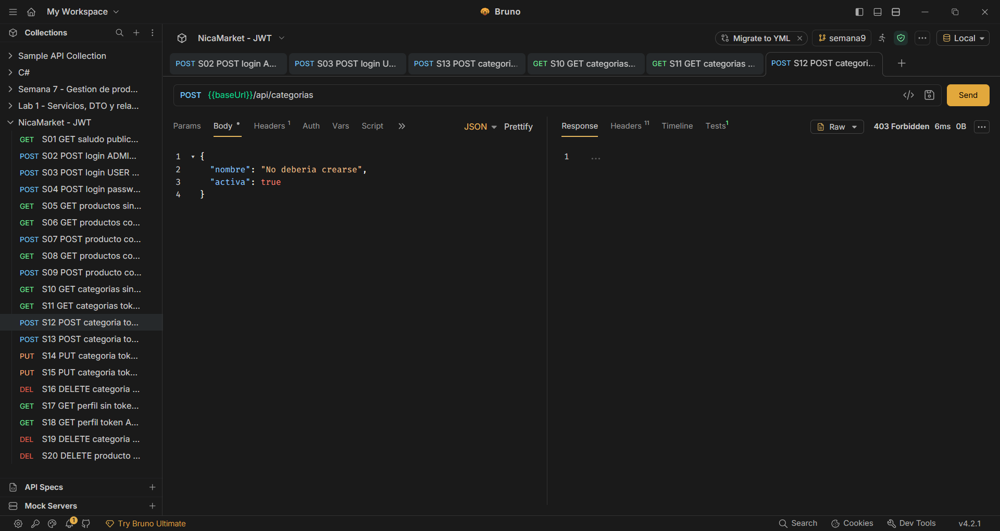
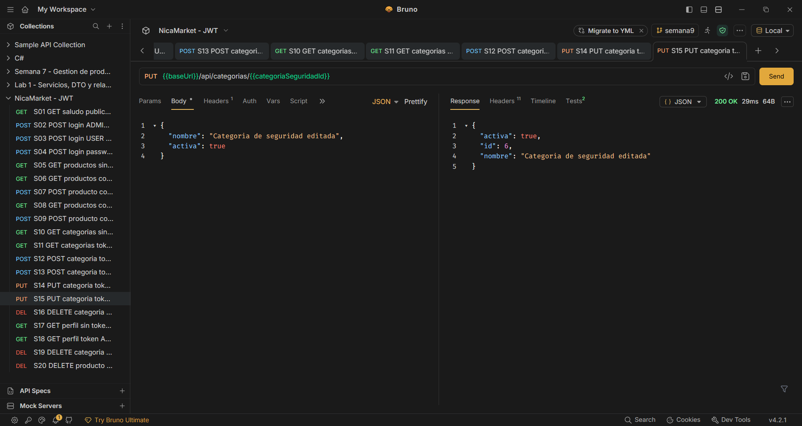

Práctica guiada n.º 9 · Documento de entrega
gestion-productos · paquete ni.edu.uam.gestion_productossemana9JWT_SECRET_BASE64 y la aplicación se niega a iniciar si falta o si
tiene menos de 32 bytes. Tampoco se incluye ningún token vigente: los tokens de
las pruebas vencen a los 30 minutos y se generan en cada ejecución.
<dependency>
<groupId>org.springframework.boot</groupId>
<artifactId>spring-boot-starter-security</artifactId>
</dependency>
<dependency>
<groupId>org.springframework.boot</groupId>
<artifactId>spring-boot-starter-oauth2-resource-server</artifactId>
</dependency>
Se insertaron dentro del bloque <dependencies> existente,
conservando Web, JPA, Flyway y el controlador de PostgreSQL. El CRUD previo no
se modificó salvo para completar las operaciones de categorías que exige el
reto final.
La guía propone el paquete com.example.factura; este proyecto usa
ni.edu.uam.gestion_productos, y las carpetas existentes se llaman
controller y service, en singular. Se respetó la
convención del proyecto, como indica la propia guía.
ni/edu/uam/gestion_productos/
├── config/SecurityConfig.java (nuevo)
├── controller/AuthController.java (nuevo)
├── controller/PublicoController.java (nuevo)
├── dto/LoginRequest.java (nuevo)
├── dto/LoginResponse.java (nuevo)
├── service/TokenService.java (nuevo)
├── controller/ProductoController.java (ya existía)
└── controller/CategoriaController.java (ya existía)
El secreto se genera con 32 bytes aleatorios codificados en Base64 y se
configura como variable de entorno en la configuración de ejecución de IntelliJ.
La validación ocurre al construir el SecretKey:
@Bean
SecretKey jwtSecretKey() {
String base64 = System.getenv("JWT_SECRET_BASE64");
if (base64 == null || base64.isBlank()) {
throw new IllegalStateException(
"Configure la variable de entorno JWT_SECRET_BASE64");
}
byte[] clave = Base64.getDecoder().decode(base64);
if (clave.length < 32) {
throw new IllegalStateException(
"La clave HS256 debe tener al menos 32 bytes");
}
return new SecretKeySpec(clave, "HmacSHA256");
}return http
.csrf(csrf -> csrf.disable())
.sessionManagement(session -> session
.sessionCreationPolicy(SessionCreationPolicy.STATELESS))
.authorizeHttpRequests(auth -> auth
.requestMatchers("/api/auth/login", "/api/publico/**")
.permitAll()
.requestMatchers(HttpMethod.GET, "/api/productos/**")
.hasAnyRole("USER", "ADMIN")
.requestMatchers("/api/productos/**")
.hasRole("ADMIN")
.requestMatchers(HttpMethod.GET, "/api/categorias/**")
.hasAnyRole("USER", "ADMIN")
.requestMatchers("/api/categorias/**")
.hasRole("ADMIN")
.anyRequest().authenticated())
.oauth2ResourceServer(oauth -> oauth.jwt(jwt ->
jwt.jwtAuthenticationConverter(converter)))
.build();
STATELESS impide que se cree una sesión HTTP: cada petición debe
traer su token. El orden importa, porque gana la primera regla que coincide: la
regla de GET aparece antes que la general, de modo que una consulta
la puede hacer USER, mientras que cualquier otro método sobre la
misma ruta exige ADMIN.
/api/auth. La guía propone
permitAll() sobre /api/auth/**. Aquí se abrió
únicamente /api/auth/login, porque el reto opcional exige que
/api/auth/perfil rechace solicitudes anónimas; con el comodín
habría quedado público.
rolesJwtGrantedAuthoritiesConverter roles = new JwtGrantedAuthoritiesConverter();
roles.setAuthoritiesClaimName("roles");
roles.setAuthorityPrefix("ROLE_");
El token lleva "roles": ["ADMIN"]. El conversor antepone
ROLE_ para producir la autoridad ROLE_ADMIN, que es la
que evalúa hasRole("ADMIN").
JwtClaimsSet claims = JwtClaimsSet.builder()
.issuer("nicamarket-laboratorio")
.issuedAt(ahora)
.expiresAt(ahora.plus(30, ChronoUnit.MINUTES))
.subject(auth.getName())
.claim("roles", roles)
.build();
AuthController delega en el AuthenticationManager, que
verifica usuario y contraseña contra los usuarios en memoria usando BCrypt. Sólo
si la autenticación es correcta se emite el token.
| # | Solicitud | Token | Resultado | Por qué |
|---|---|---|---|---|
| 1 | GET /api/publico/saludo | Sin token | 200 | La ruta está en permitAll(). |
| 2 | POST /api/auth/login | Credenciales válidas | 200 + JWT | BCrypt valida la contraseña y se firma el token. |
| 3 | POST /api/auth/login | Contraseña incorrecta | 401 | Falla la autenticación: no se sabe quién es. |
| 4 | GET /api/productos | Sin token | 401 | Recurso protegido sin credencial alguna. |
| 5 | GET /api/productos | USER | 200 | La consulta admite USER o ADMIN. |
| 6 | POST /api/productos | USER | 403 | Se sabe quién es, pero su rol no alcanza. |
| 7 | GET /api/productos | Token modificado | 401 | La firma HMAC no coincide: el token se rechaza. |
| 8 | POST /api/productos | ADMIN | 200 | Rol suficiente y datos válidos; el producto se crea. |
Para que el reto fuera verificable se completó el CRUD de categorías, que sólo
tenía GET y POST: se agregaron PUT y
DELETE en CategoriaController y
CategoriaService. Sin ellos no era posible comprobar que
ADMIN puede editar y eliminar.
Las cinco evidencias solicitadas, con su explicación:
| # | Solicitud | Token | Resultado | Por qué se obtuvo ese código |
|---|---|---|---|---|
| 1 | GET /api/categorias | Sin token | 401 | No hay cabecera Authorization. El recurso exige identificación antes de evaluar cualquier permiso. |
| 2 | GET /api/categorias | USER | 200 | La regla de GET admite USER y ADMIN: el operador puede consultar. |
| 3 | POST /api/categorias | USER | 403 | El token es válido y la identidad es conocida, pero la regla general exige ADMIN. Es autorización, no autenticación. |
| 4 | PUT /api/categorias/{id} | USER | 403 | Igual que el anterior: PUT no es GET, por lo que cae en la regla de ADMIN. |
| 5 | PUT /api/categorias/{id} | ADMIN | 200 | Rol suficiente y cuerpo válido: la categoría se actualiza y se devuelve con el nombre modificado. |
Las capturas siguientes corresponden una a una a las filas de la tabla
anterior. Todas se tomaron sobre la colección bruno-seguridad con
el entorno Local y la aplicación escuchando en
http://localhost:8080. La cabecera Authorization
aparece como la variable {{tokenUser}} o {{tokenAdmin}},
de modo que ningún token vigente queda expuesto en este documento.

GET /api/categorias sin
cabecera Authorization. El filtro de recurso rechaza la petición
antes de evaluar roles, por eso el cuerpo viene vacío.

GET con el token de
operador (rol USER) sí devuelve el listado, porque la
regla de lectura admite USER y ADMIN.

POST /api/categorias con el
mismo token USER. El servidor sabe quién es: lo que falta es el
rol ADMIN. Aquí se ve la diferencia entre 401 y 403.
PUT /api/categorias/{{categoriaSeguridadId}}
con token USER. PUT no es GET, así que
cae en la regla que exige ADMIN.

PUT con el token de
admin. La respuesta devuelve la categoría ya modificada
("nombre": "Categoria de seguridad editada"), lo que confirma que
el cambio se aplicó en la base de datos.
GET /api/auth/perfil@GetMapping("/perfil")
public Map<String, Object> perfil(Authentication auth) {
List<String> roles = auth.getAuthorities().stream()
.map(GrantedAuthority::getAuthority)
.filter(a -> a.startsWith("ROLE_"))
.map(a -> a.substring(5))
.toList();
return Map.of("usuario", auth.getName(), "roles", roles);
}
Sin token devuelve 401; con un token válido devuelve el
subject y los roles leídos del JWT:
{"usuario":"admin","roles":["ADMIN"]}
Colección bruno-seguridad: 20 peticiones que cubren la tabla de la
guía, el reto final y el reto opcional, y que terminan eliminando los registros
creados para poder repetirse.
npx @usebruno/cli run . --env Local
┌───────────────┬────────────────┐
│ Status │ ✓ PASS │
│ Requests │ 20 (20 Passed) │
│ Tests │ 26/26 │
└───────────────┴────────────────┘Cada petición comprueba el código HTTP exacto que se espera, de modo que la evidencia es reproducible: basta ejecutar la colección con la aplicación iniciada.
operador
devuelve 403.
"roles": ["USER"] por ["ADMIN"]. Lo que da confianza
es la tercera parte, la firma, calculada con la clave secreta. Sólo quien posee
esa clave puede generar una firma válida, y el servidor la recalcula en cada
petición. Por eso la prueba 7 devuelve 401: el contenido parecía correcto, pero
la firma dejó de coincidir al alterar el token.
JwtDecoder?
Recibir el token que llega en la cabecera Authorization y
validarlo antes de que la petición alcance cualquier controlador. Verifica la
firma con la clave secreta y el algoritmo declarado (HS256), comprueba que no
haya vencido según expiresAt y expone los claims ya validados. Si
algo falla, la petición se rechaza con 401 y nunca llega a la lógica de
negocio.
ADMIN y acceder a
todas las operaciones protegidas; el servidor lo aceptaría porque la firma sería
legítima. Además, como los tokens no se consultan contra una base, no hay forma
de revocarlos uno a uno: habría que rotar la clave, lo que invalida de golpe
todos los tokens emitidos. Por eso la clave se mantiene fuera del repositorio,
en una variable de entorno.
La guía está escrita para Spring Boot 3.x con Spring Security 6.x. Este proyecto
usa Spring Boot 4.1.1 con Spring Security 7, y el código de la
guía compiló y funcionó sin cambios de API. La única corrección necesaria fue en
el endpoint de perfil: Spring Security 7 agrega la autoridad técnica
FACTOR_BEARER junto a los roles, por lo que se filtran únicamente
las autoridades que empiezan con ROLE_ antes de responder.
Tal como advierte la nota docente, en esta práctica la misma aplicación emite y
valida los tokens para simplificar el laboratorio. En un sistema real convendría
separar el emisor del validador, administrar la clave con un gestor de secretos,
validar emisor y audiencia, y exponer la API únicamente sobre HTTPS. La
desactivación de CSRF es admisible aquí porque la API no usa sesiones ni cookies:
la credencial viaja en la cabecera Authorization, que un sitio
externo no puede adjuntar automáticamente.